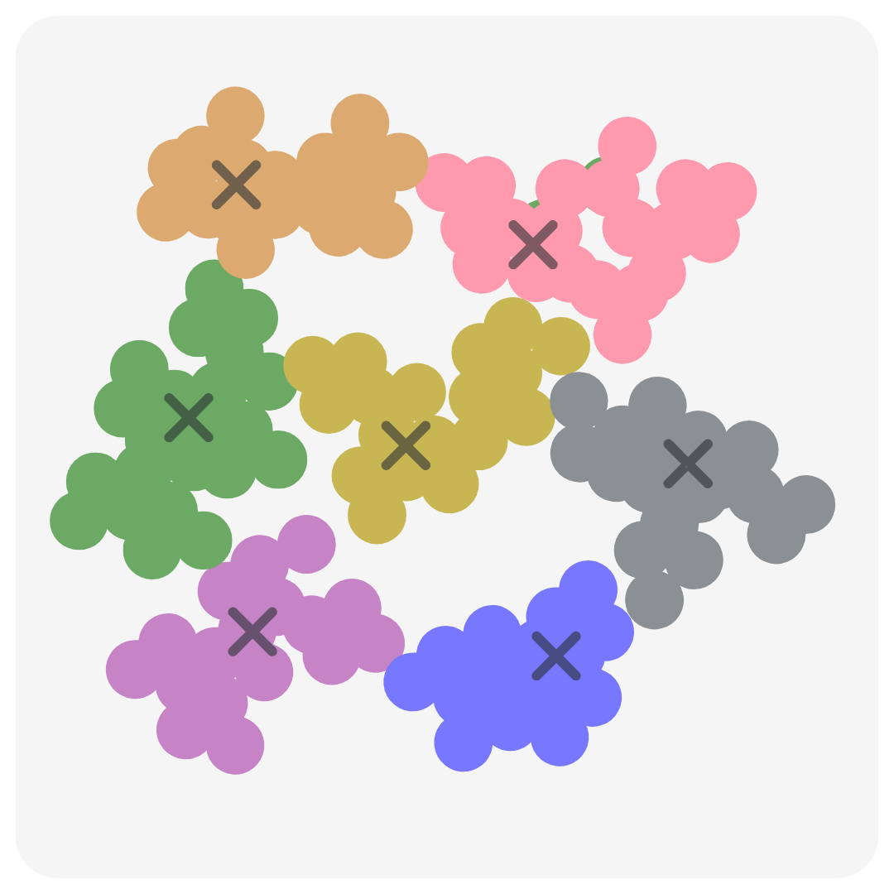

K-Nearest Neighbors Classifier
Implemented a KNN model from scratch and compared its accuracy against scikit-learn for geographical classification.
Extended Kalman Filter Localization
Used EKF to estimate 2D robot position using sensor fusion. Simulated noisy GPS and odometry data.
Zeros of Complex Harmonic Polynomials

Complex Analysis Research: Explored how complex roots behave for a family of polynomials with interactive visualizations.
Semantic Similarity NLP Research
Studied sentence embedding techniques like Latent Semantic Indexing (LSI) and Latent Dirichlet Allocation (LDA) for clustering and semantic comparison.
Ukraine Immigration Modeling
Modeled refugee migration during the Ukraine conflict using a compartmental SIR differential equation model.
Coral Reef Bleaching Prediction
ARMA Model classifier to analyze and forecast coral reef bleaching in the U.S. Virgin Islands.
Rocket Path Planning
Optimal Control model to minimize fuel for a rocket constrained to an asteroid field. Solved boundary value problem to plan safe rocket trajectories.
Wordle Solver via Information Theory
Developed a Wordle solver that uses entropy and information gain to guess the optimal next word.